عيادة د. مختار الشرعبي
الإستشارية للأنف والأذن والحنجرة
في هذا المعرض نوثق بعضًا من العمليات التي أُجريت باستخدام تقنيات المنظار الحديثة، وتشمل عمليات ترقيع الطبلة، تجميل الأنف، إصلاح كسور الأنف، وغيرها من الإجراءات المتقدمة التي نُفذت في عيادة د. مختار الشرعبي بمحافظة تعز.
 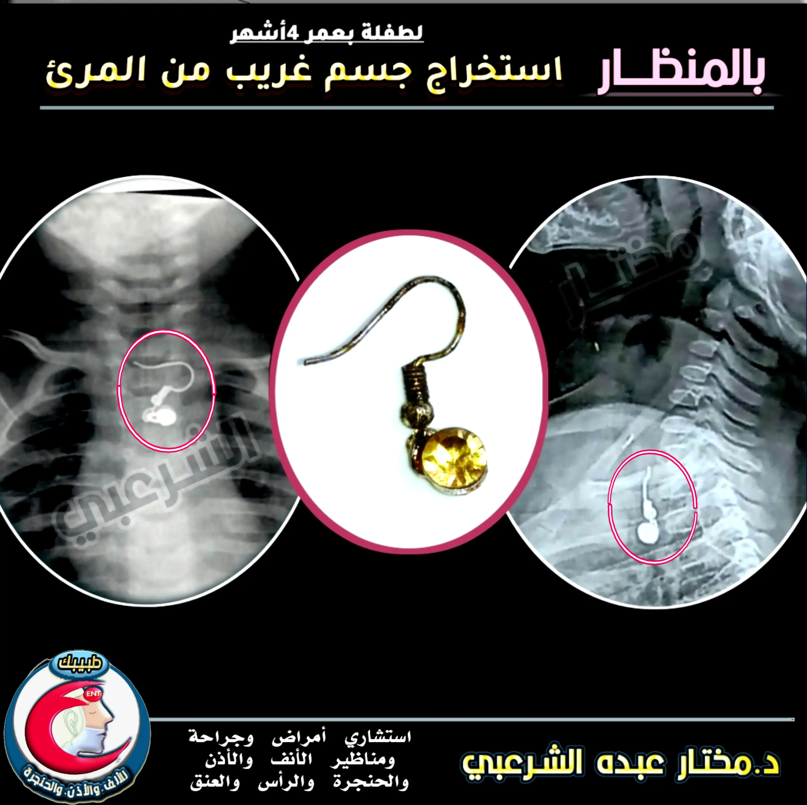
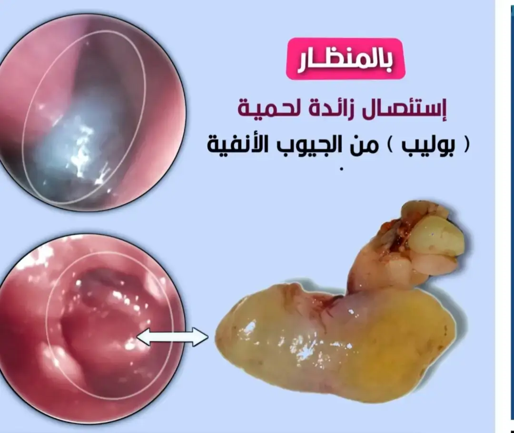
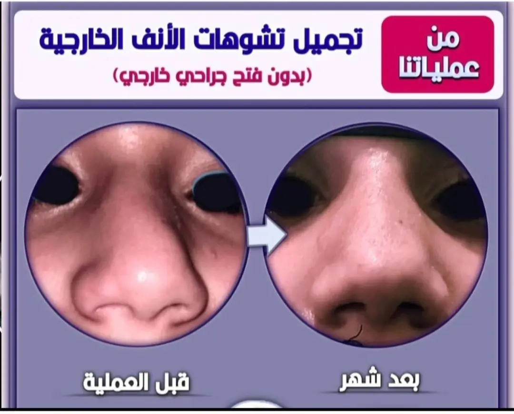
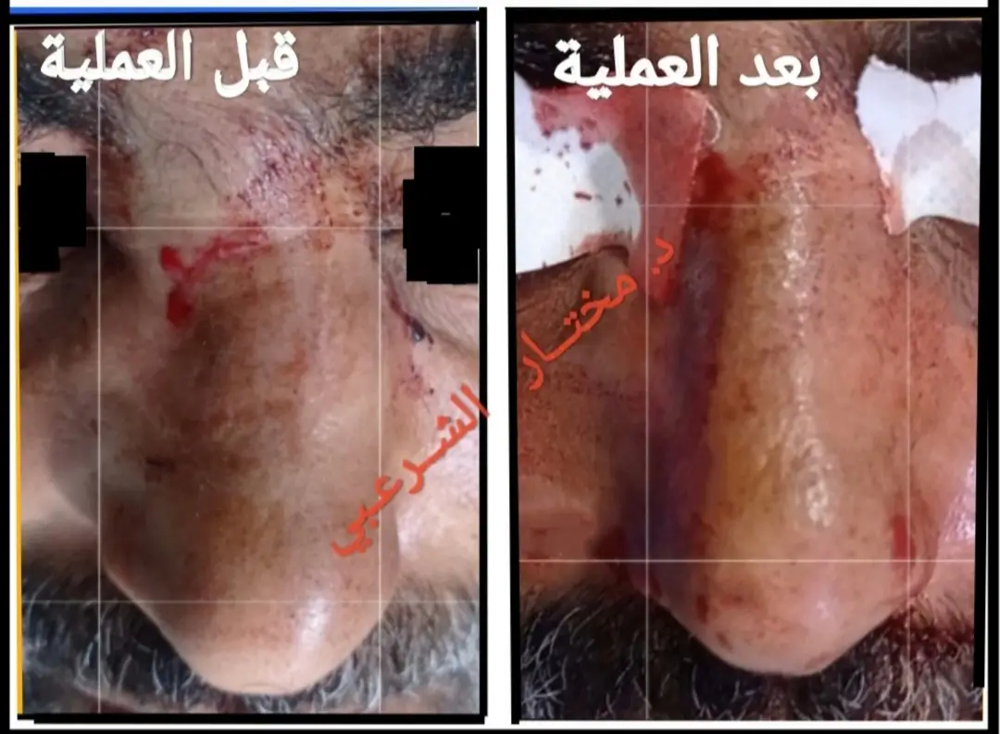
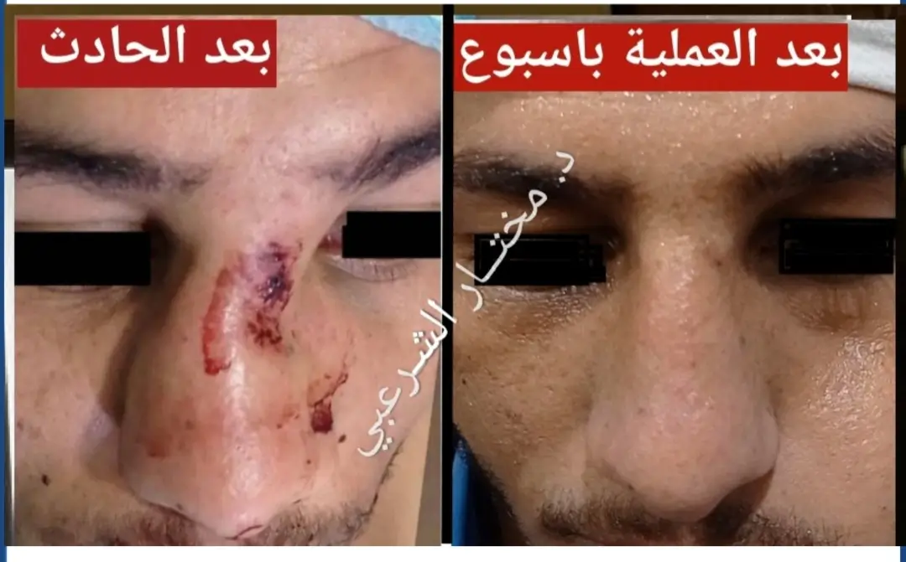
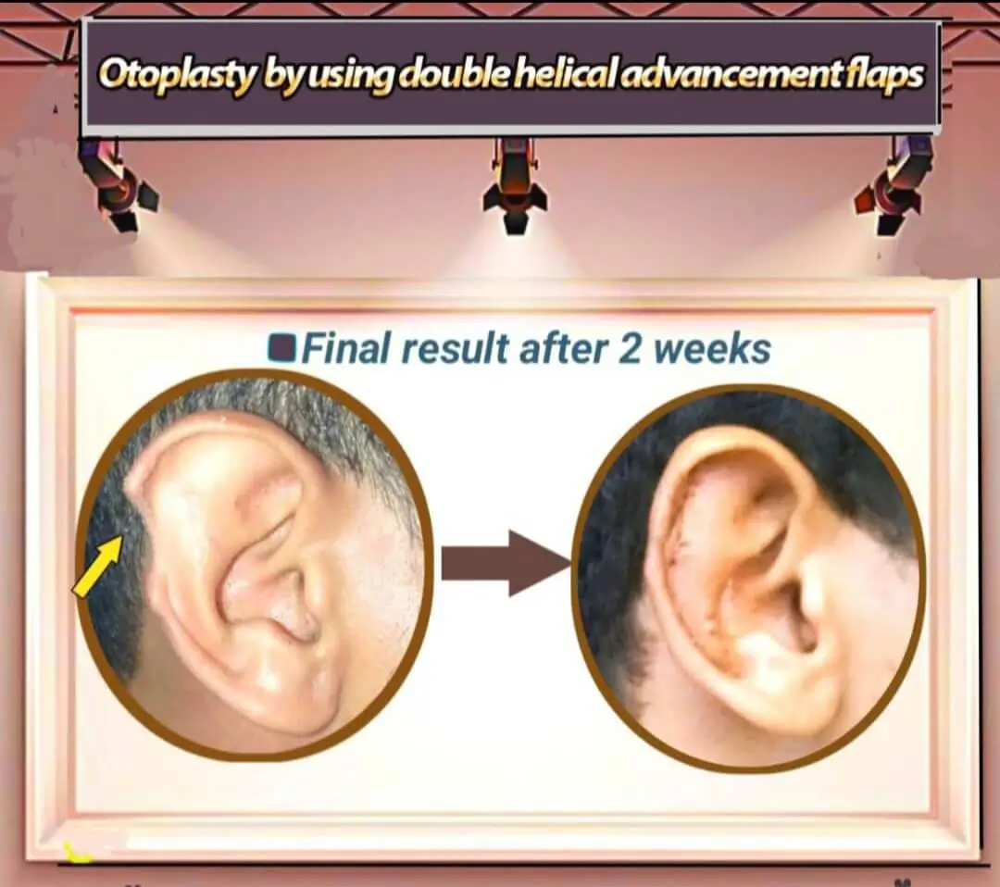
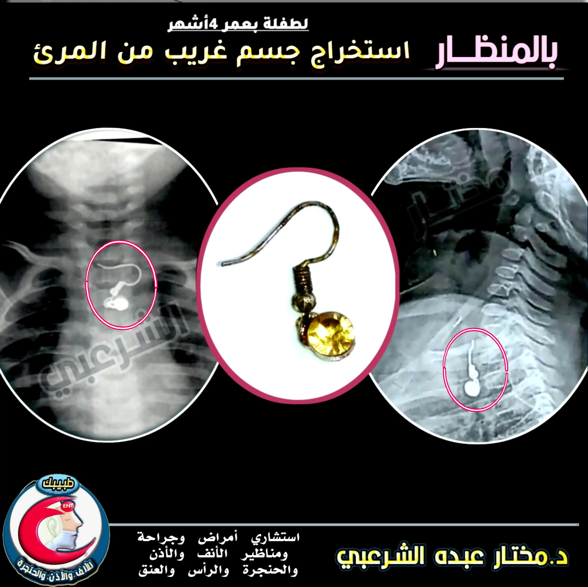
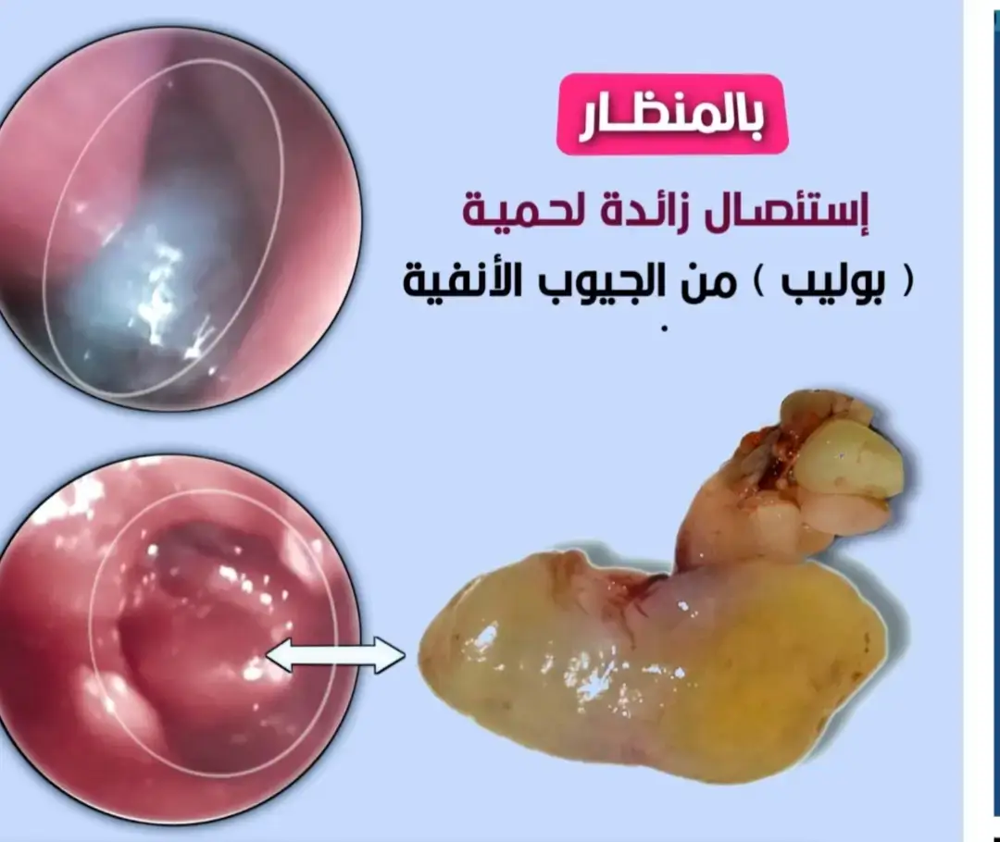
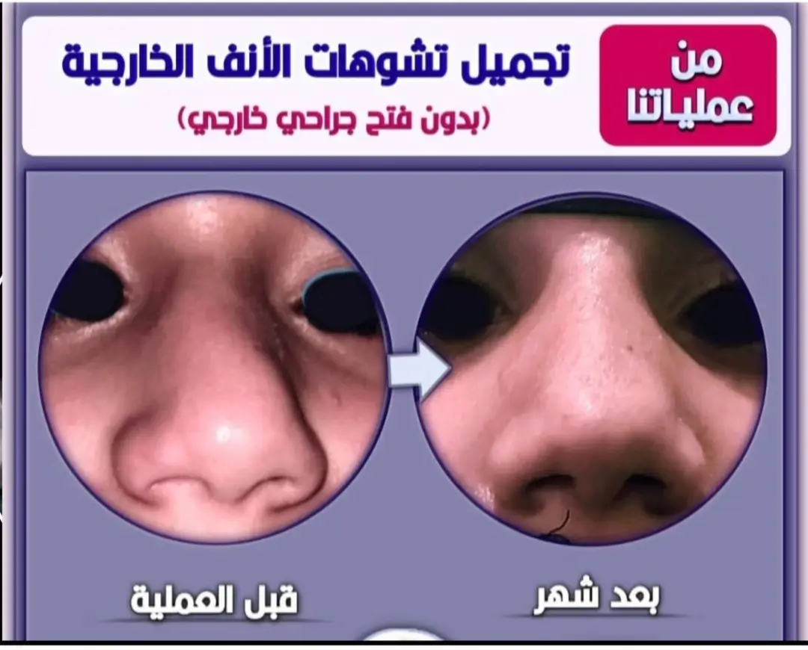
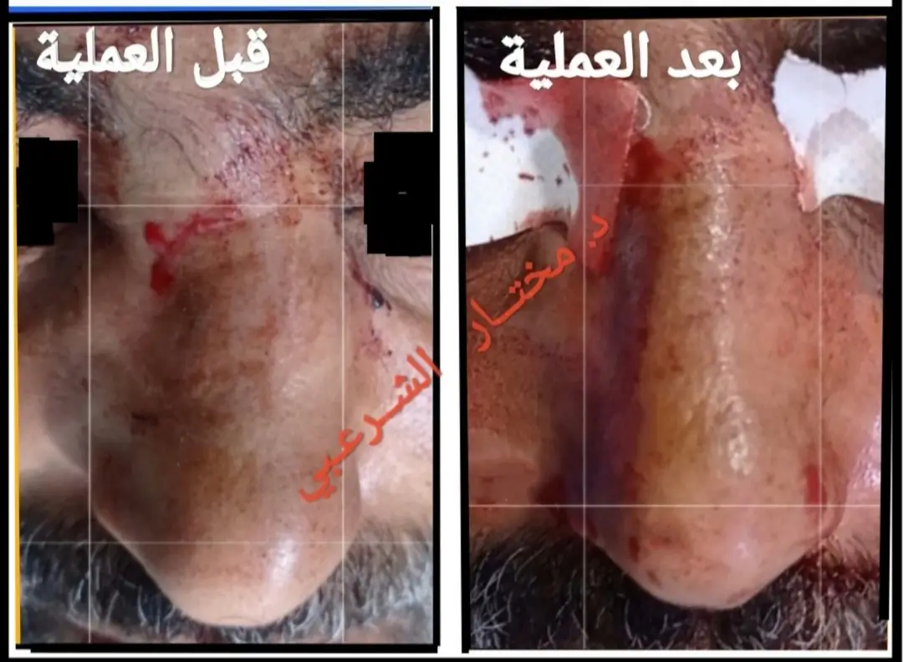
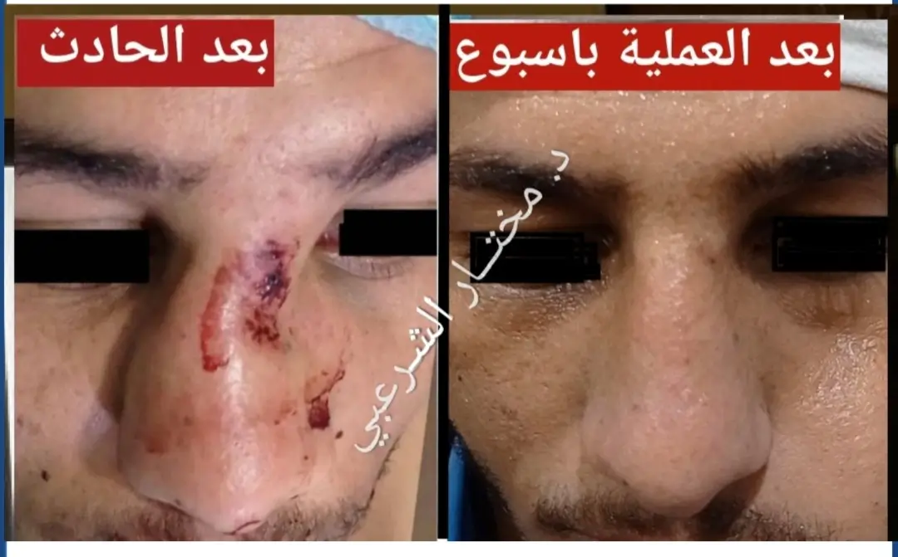
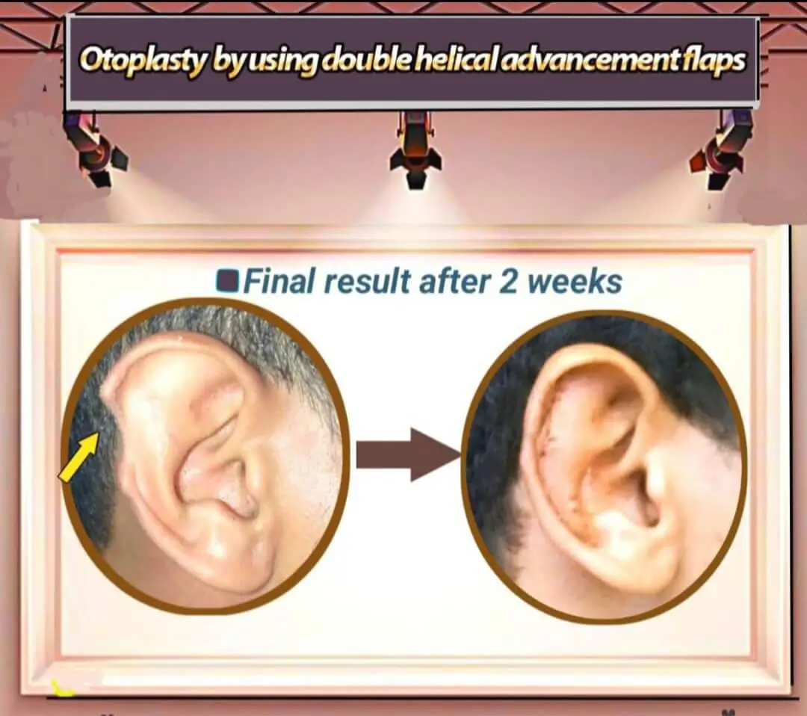